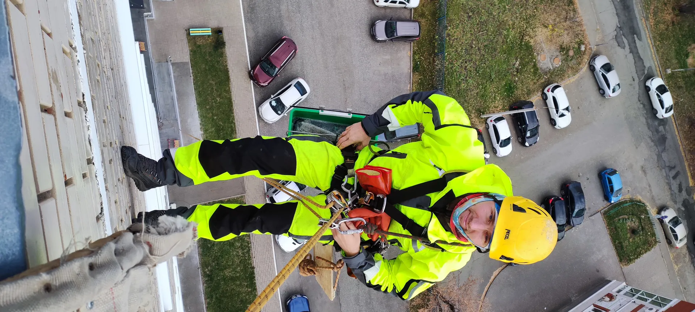
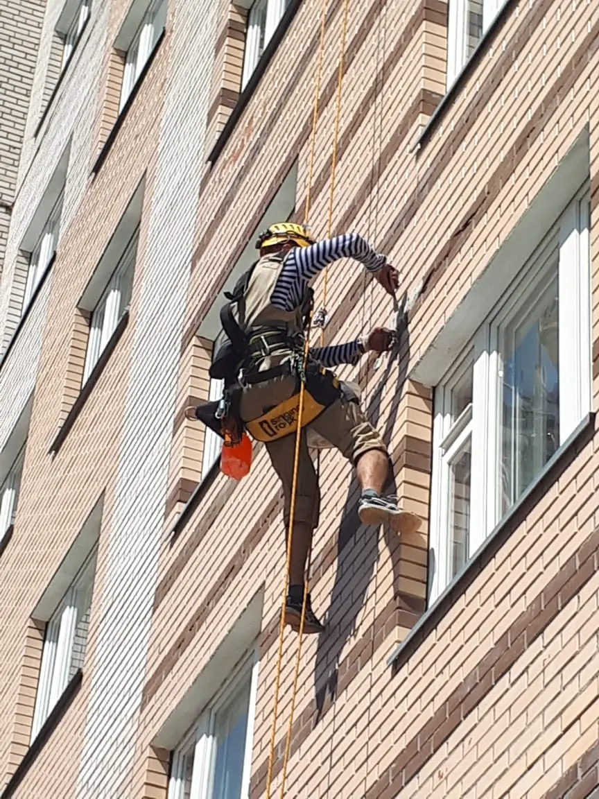
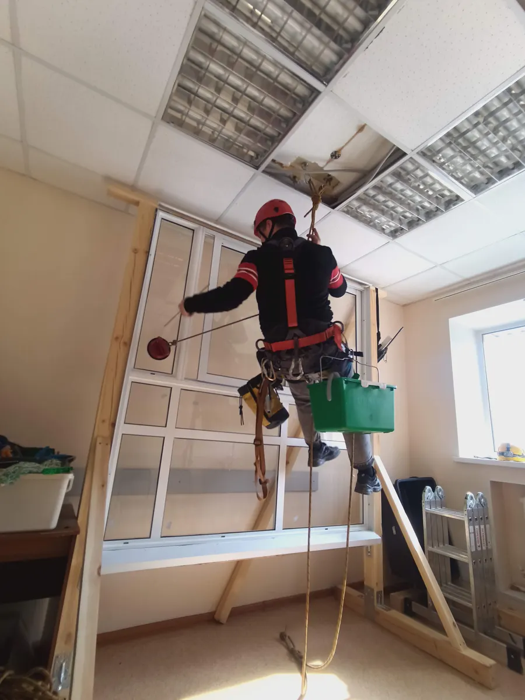
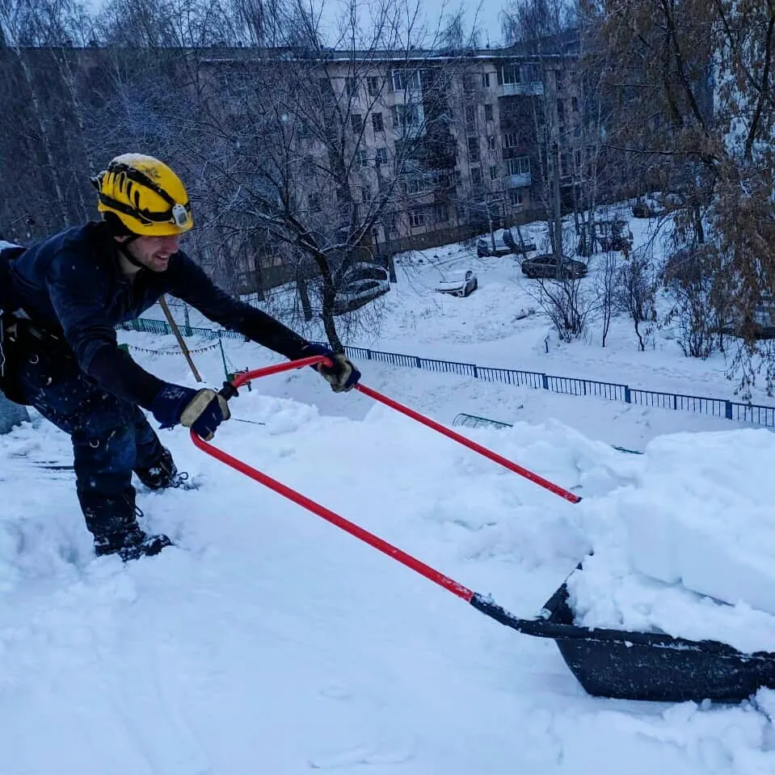

Промышленный альпинизм · Ижевск
Мойка окон и фасадов альпинистами в Ижевске
Мойка снаружи с канатов: 400 ₽ за створку. Чистим кровли от снега, ремонтируем швы, монтируем витражи.
- 5,0 на Яндекс.Картах, 47 оценок
- Работаем каждый день с 9 до 16
- Наличные, карта, перевод, QR

Что в цене мойки
Входит
- Мойка снаружи с канатов, методом промышленного альпинизма
- Окна, балконное остекление, витражи и другие светопрозрачные конструкции
- Цена 400 ₽ считается за каждую створку
- Своё снаряжение и инструмент
Отдельно, если нужно
- Нестандартные работы на высоте: опишите задачу в заявке, и мы ответим, возможна ли она
Цены из карточки на Яндекс.Картах
Мойка снаружи считается за створку, витражи и монтаж – за рабочий день. Другие работы на высоте обсуждаем по заявке.
Мойка
- Мойка окон и балконного остекления снаружис канатов, методом промышленного альпинизма400 ₽ за створку
- Высотная мойка витражей и светопрозрачных конструкций24 000 ₽ за день
Крыши и швы
- Уборка снега и наледи с крышот плоских до сложных крыш частных домов200 ₽ за м²
- Ремонт межпанельных швовс материалом и тепловизионным контролем1 800 ₽ за м
Остекление и монтаж
- Монтаж и демонтаж витражного остекления40 000 ₽ за день
- Монтажные и демонтажные работы на высоте24 000 ₽ за день
- Поиск причин и устранение протечек балкона или лоджии14 000 ₽ за объект
- Поиск причин и устранение продувания и промерзания витражаобследование тепловизором и снаружи с канатов24 000 ₽ за объект
Нужна работа, которой нет в списке? Опишите её в заявке: ответим, возьмёмся ли.
Как проходит
Заявка
Пишете в MAX или звоните: что моем и сколько створок.
Цена и день
Называем сумму по прайсу и согласуем день работ.
Работа
Альпинисты работают снаружи с канатов, со своим снаряжением.
Оплата
Предоплата или постоплата: наличными, картой, переводом, по ссылке или по QR-коду.



Что обещаем
Цена известна до выезда
400 ₽ за створку по прайсу, итог считает калькулятор выше.
Своё снаряжение
Ничего готовить и покупать не нужно.
Оплата любым способом
Наличные, карта, перевод, оплата по ссылке и QR.
Гарантия
Условия гарантии называем при согласовании работ.
Отзывы с Яндекс.Карт
«Второй или третий год подряд заказываем мойку панорамной лоджии и окон комнаты. Всегда всё хорошо, спасибо!»
Светлана · 17 июня 2025
«Окна блестят! Молодцы ребята! Работают качественно, всегда на связи, быстро согласовывают все вопросы.»
Елена О. · 16 мая 2025
«Постоянно пользуюсь услугами по мытью окон данного ИП. Хотелось бы отметить профессиональный подход к своему делу, всегда качественно и своевременно.»
Инна Кудрявцева · 26 мая 2025
Отзывы с карточки на Яндекс.Картах.
Частые вопросы
Сколько стоит мойка окон?
400 ₽ за створку. Количество створок считает калькулятор выше. Витражи считаем по дням: 24 000 ₽ за день.
Как оплатить?
Предоплата или постоплата. Принимаем наличные, карту, перевод, оплату по ссылке и QR-код.
Когда вы работаете?
Каждый день с 9:00 до 16:00.
А если задача не из прайса?
Работаем методом канатного доступа и берёмся за другие работы на высоте: монтаж, ремонт швов, герметизацию, обследование тепловизором. Опишите задачу в заявке, ответим, возможна ли она.
Напишите, сколько створок, и вернёмся с суммой и днём
- Адрес
- Воткинское ш., 170Г, Ижевск
- Часы
- Ежедневно, 9:00–16:00
- Телефон
- +7 (909) 061-39-86